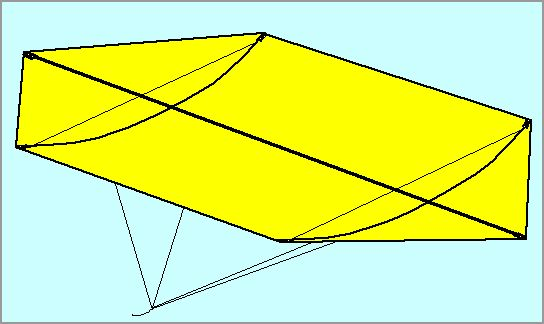
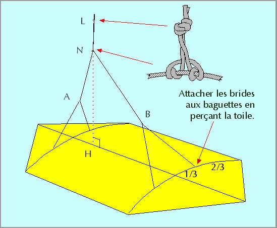

Le Rokkaku est un cerf-volant japonais utilisé pour des combats ou pour voler seul. Il a une grande stabilité et est facile à construire.
Il faut :
• de la toile ("spi" conseillé) et une machine à coudre,
• un peu de toile forte pour les goussets (Dacron conseillé),
• des baguettes (tubes 4 et 5 mm en fibre de carbone),
• de la ficelle.

REALISATION
1) Couper un hexagone dans la toile, ourler les bords.
2) Coudre des goussets pour les baguettes à chaque coin.
3) Enfiler les baguettes d'un côté, les couper à la longueur. La toile doit être bien tendue.
4) Attacher aux baguettes des tendeurs transversaux pour les courber.
5) Attacher aux baguettes les 4 brides et les régler.
C'EST FINI !
Pour le tendeur, on utilisera (ovale rouge) un "Noeud de fouet" qui peut coulisser et permettra de régler la courbure en fonction du besoin, et de détendre pour ranger.
Etape 6 : Bridage
Placer d'abord la bride AB en passant à travers le plastique avec une aiguille ou en faisant un petit trou. Bien serrer sur les baguettes en faisant un noeud coulant pour ne pas que ça glisse.
Faire ensuite un "Noeud d'alouette d'estrope double" coulissant serré sur AB. Malgré son nom, ce noeud est très simple à réaliser : faire d'abord une boucle en faisant un noeud avec les 2 bouts d'une ficelle. Ensuite, entourer AB et passer le noeud 2 fois dans la boucle. Veillez à répartir les tours comme sur le schéma, c'est plus joli.

Le point H doit être environ au 1/3 avant du cerf-volant. Ajuster ensuite selon essais en coulissant N, puis bien serrer le noeud.
Vous pourrez attacher au noeud L votre ligne en faisant une boucle au bout de celle-ci et une tête d'alouette simple. Ce noeud est très sûr mais permettra un démontage facile pour le rangement.
Pour le démontage, détendre les tendeurs, sortir les 2 bouts de la barre longitudinale des goussets, puis rouler le tout.
Remarque : Ce cerf-volant peut aussi être réalisé en feuille de plastique, bambou et ruban adhésif. Mais sa solidité est alors limitée alors que c'est un cerf-volant qui tire, et il est indémontable. On se limitera donc en ce cas à de petites dimensions.